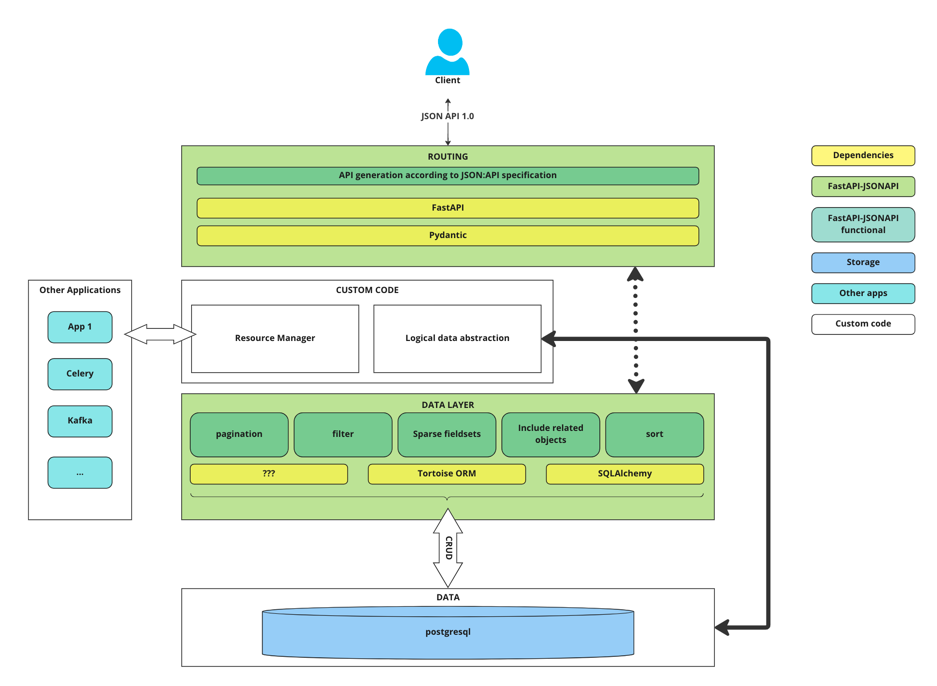

FastAPI-JSONAPI
FastAPI-JSONAPI is an extension for FastAPI that adds support for quickly building REST APIs with huge flexibility around the JSON:API 1.0 specification. It is designed to fit the complexity of real life environments so FastAPI-JSONAPI helps you to create a logical abstraction of your data called “resource”. It can interface any kind of ORMs or data storage through the concept of data layers.
Main concepts
{kind=link}
Features
FastAPI-JSONAPI has many features:
Relationship management - in developing
Powerful filtering
Include related objects - in developing
Sparse fieldsets - in developing
Pagination
Sorting
Permission management - in developing
OAuth support - in developing
User’s Guide
This part of the documentation will show you how to get started using FastAPI-JSONAPI with FastAPI.
- Installation
- A minimal API
- Filtering API example
- Quickstart
- Limit API methods
- Routing
- Atomic Operations
- View Dependencies
- Filtering
- Create and include related objects (updated example)
- Include related objects
- Include nested and related, Many-to-Many
- Custom SQL filtering
- Client generated id
- Logical data abstraction
- Data layer
- Define relationships
- Configuration
- Sparse fieldsets
- Pagination
- Sorting
- Errors
- Permission
- OAuth
- Package fastapi_jsonapi index
- fastapi_jsonapi.data_layers.fields.enum module
- fastapi_jsonapi.data_layers.fields.mixins module
- fastapi_jsonapi.data_layers.filtering.sqlalchemy module
- fastapi_jsonapi.data_layers.filtering.tortoise_operation module
- fastapi_jsonapi.data_layers.filtering.tortoise_orm module
- fastapi_jsonapi.data_layers.sorting.sqlalchemy module
- fastapi_jsonapi.data_layers.sorting.tortoise_orm module
- fastapi_jsonapi.data_layers.base module
- fastapi_jsonapi.data_typing module
- fastapi_jsonapi.data_layers.orm module
- fastapi_jsonapi.data_layers.shared module
- fastapi_jsonapi.data_layers.sqla_orm module
- fastapi_jsonapi.data_layers.tortoise_orm module
- fastapi_jsonapi.api module
- fastapi_jsonapi.jsonapi_typing module
- fastapi_jsonapi.querystring module
- fastapi_jsonapi.schema module
- fastapi_jsonapi.signature module
- fastapi_jsonapi.splitter module
A minimal API
import sys
from pathlib import Path
from typing import Any, ClassVar, Dict
import uvicorn
from fastapi import APIRouter, Depends, FastAPI
from sqlalchemy import Column, Integer, Text
from sqlalchemy.engine import make_url
from sqlalchemy.ext.asyncio import AsyncSession, create_async_engine
from sqlalchemy.ext.declarative import declarative_base
from sqlalchemy.orm import sessionmaker
from fastapi_jsonapi import RoutersJSONAPI, init
from fastapi_jsonapi.misc.sqla.generics.base import DetailViewBaseGeneric, ListViewBaseGeneric
from fastapi_jsonapi.schema_base import BaseModel
from fastapi_jsonapi.views.utils import HTTPMethod, HTTPMethodConfig
from fastapi_jsonapi.views.view_base import ViewBase
CURRENT_FILE = Path(__file__).resolve()
CURRENT_DIR = CURRENT_FILE.parent
PROJECT_DIR = CURRENT_DIR.parent.parent
DB_URL = f"sqlite+aiosqlite:///{CURRENT_DIR}/db.sqlite3"
sys.path.append(str(PROJECT_DIR))
Base = declarative_base()
class User(Base):
__tablename__ = "users"
id = Column(Integer, primary_key=True)
name = Column(Text, nullable=True)
class UserAttributesBaseSchema(BaseModel):
name: str
class Config:
orm_mode = True
class UserSchema(UserAttributesBaseSchema):
"""User base schema."""
def async_session() -> sessionmaker:
engine = create_async_engine(url=make_url(DB_URL))
_async_session = sessionmaker(bind=engine, class_=AsyncSession, expire_on_commit=False)
return _async_session
class Connector:
@classmethod
async def get_session(cls):
"""
Get session as dependency
:return:
"""
sess = async_session()
async with sess() as db_session: # type: AsyncSession
yield db_session
await db_session.rollback()
async def sqlalchemy_init() -> None:
engine = create_async_engine(url=make_url(DB_URL))
async with engine.begin() as conn:
await conn.run_sync(Base.metadata.create_all)
class SessionDependency(BaseModel):
session: AsyncSession = Depends(Connector.get_session)
class Config:
arbitrary_types_allowed = True
def session_dependency_handler(view: ViewBase, dto: SessionDependency) -> Dict[str, Any]:
return {
"session": dto.session,
}
class UserDetailView(DetailViewBaseGeneric):
method_dependencies: ClassVar = {
HTTPMethod.ALL: HTTPMethodConfig(
dependencies=SessionDependency,
prepare_data_layer_kwargs=session_dependency_handler,
),
}
class UserListView(ListViewBaseGeneric):
method_dependencies: ClassVar = {
HTTPMethod.ALL: HTTPMethodConfig(
dependencies=SessionDependency,
prepare_data_layer_kwargs=session_dependency_handler,
),
}
def add_routes(app: FastAPI):
tags = [
{
"name": "User",
"description": "",
},
]
router: APIRouter = APIRouter()
RoutersJSONAPI(
router=router,
path="/users",
tags=["User"],
class_detail=UserDetailView,
class_list=UserListView,
schema=UserSchema,
model=User,
resource_type="user",
)
app.include_router(router, prefix="")
return tags
def create_app() -> FastAPI:
"""
Create app factory.
:return: app
"""
app = FastAPI(
title="FastAPI and SQLAlchemy",
debug=True,
openapi_url="/openapi.json",
docs_url="/docs",
)
add_routes(app)
app.on_event("startup")(sqlalchemy_init)
init(app)
return app
app = create_app()
if __name__ == "__main__":
uvicorn.run(
app,
host="0.0.0.0",
port=8080,
)
This example provides the following API structure:
URL |
method |
endpoint |
Usage |
|---|---|---|---|
/users |
GET |
user_list |
Get a collection of users |
/users |
POST |
user_list |
Create a user |
/users |
DELETE |
user_list |
Delete users |
/users/{user_id} |
GET |
user_detail |
Get user details |
/users/{user_id} |
PATCH |
user_detail |
Update a user |
/users/{user_id} |
DELETE |
user_detail |
Delete a user |
Request:
POST /users HTTP/1.1
Content-Type: application/vnd.api+json
{
"data": {
"type": "user",
"attributes": {
"name": "John"
}
}
}
Response:
HTTP/1.1 201 Created
Content-Type: application/vnd.api+json
{
"data": {
"attributes": {
"name": "John"
},
"id": "1",
"links": {
"self": "/users/1"
},
"type": "user"
},
"jsonapi": {
"version": "1.0"
},
"links": {
"self": "/users/1"
}
}
Request:
GET /users/1 HTTP/1.1
Content-Type: application/vnd.api+json
Response:
HTTP/1.1 200 OK
Content-Type: application/vnd.api+json
{
"data": {
"attributes": {
"name": "John"
},
"id": "1",
"links": {
"self": "/users/1"
},
"type": "user"
},
"jsonapi": {
"version": "1.0"
},
"links": {
"self": "/users/1"
}
}
Request:
GET /users HTTP/1.1
Content-Type: application/vnd.api+json
Response:
HTTP/1.1 200 OK
Content-Type: application/vnd.api+json
{
"data": [
{
"attributes": {
"name": "John"
},
"id": "1",
"links": {
"self": "/users/1"
},
"type": "user"
}
],
"jsonapi": {
"version": "1.0"
},
"links": {
"self": "http://localhost:5000/users"
},
"meta": {
"count": 1
}
}
Request:
PATCH /users/1 HTTP/1.1
Content-Type: application/vnd.api+json
{
"data": {
"id": 1,
"type": "user",
"attributes": {
"name": "Sam"
}
}
}
Response:
HTTP/1.1 200 OK
Content-Type: application/vnd.api+json
{
"data": {
"attributes": {
"name": "Sam"
},
"id": "1",
"links": {
"self": "/users/1"
},
"type": "user"
},
"jsonapi": {
"version": "1.0"
},
"links": {
"self": "/users/1"
}
}
Request:
DELETE /users/1 HTTP/1.1
Content-Type: application/vnd.api+json
Response:
HTTP/1.1 200 OK
Content-Type: application/vnd.api+json
{
"jsonapi": {
"version": "1.0"
},
"meta": {
"message": "Object successfully deleted"
}
}
API Reference
If you are looking for information on a specific function, class or method, this part of the documentation is for you.